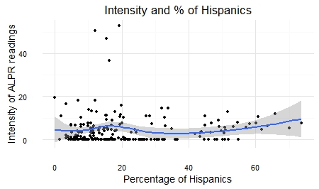
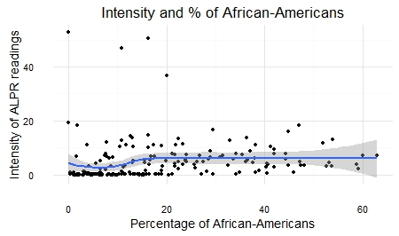

Police cars mounted with automatic license plate readers (ALPRs) are always winding their way through the streets of Oakland. The cameras are recording the plate numbers of vehicles in the front and behind, as well as collecting footage on the surrounding areas. The policy of the Oakland Police Department (PD) is to utilize ALPR technology to capture and store digital license plate data and images in order to track stolen vehicles, monitor hit-and-run cases and record suspicious activity. Each morning, before the patrol gets into the car, they receive a "hit list" of plate numbers that are loaded into the readers and fires off an alert if any number matches plates of vehicles on the street. In the revised policy, Oakland PD has established a retention policy of 6 months, after which records will be destroyed.
In a 2012 report, American Civil Liberties Union (ACLU) identified that less than 1% of the data collected using ALPR technology matched the "hit list". This poses an important question: what is being done with our sensitive, private location information? The technology is automated, but a retention policy of up to 6 months means public agencies like the Oakland PD can put together pieces of location information. This reveals personal information such as political or political associations that can be abused and breaches privacy laws.
The data collected for this analysis was received as a result of public records request, leading to the release of over 2.7 million readings between 2010 and 2014 on the Oakland Open Data website. Other data sources include American Fact Finder (race and income), Metropolitan Transport Commission (traffic flow) and Caltrains (traffic flow). The following visualizations should provide more insight into how plate numbers are being collected, what neighborhoods are frequented and further analysis on disparaties, such as uneven surveillance on minority groups.
Mapping the raw data of ALPR readings over time reveals specific neighborhoods faced more surveillance than others. The heatmap provides an overview of neighborhoods with repeated surveillance.
The finding gets more interesting as we gauge deeper into the data. I aggregated the number of license plate readings per day and plotted it against time to show the trend.
The flat lines on the time axis showing zero readings corroborate to missing data in the released records. The data retention policy cited earlier was only recently determined by Oakland PD, until which point all the data was recorded and retained infinitely. I spoke to Mike Katz-Lacabe from the Center for Human Rights and Privacy, and a well-informed privacy expert from the Bay Area to understand the piece about missing data. He explained to me how the lack of a defined retention policy meant data was being stored in external hard drives and damaged. There is a possibility the Oakland PD was not able to release the records because the data is lost.
We can see from the timestamp graph the are tallest spikes are in August 29, 2012 and August 2, 2014. Once we dive deeper into the data, we can find out if that corresponds to an important political event, which could point to why more records were collected during certain time periods.
In the second part of the analysis, I tried to find out if minority groups, such as African-Americans and Hispanics are being disparately targeted. This means there will be more patrol equipped with ALPR technology in neighborhoods with higher percentages of the African-Americans or Hispanics. In order to make the analysis accurate, I had to normalize total readings in a given neighborhood by population. The map shows certain areas, such as Oakland Airport and downtown Oakland having a higher intensity of ALPR records with proportion to the population.
When compared with percentages of African-American or Hispanic population, we find areas such as Oakland Airport have high concentrations of African-American population and high ALPR intensity. However, it is early to draw any causal relationsip because the high intensity of readings can also be explained by the fact there are more vehicles near the airport. On the other hand, neighborhoods with high percentage of Hispanics show relatively high intensity of ALPR readings consistently, ranging between 0.4 to 7.0 units.
In order to draw a statistically significant relationship, I plotted the intensity of ALPR readings against the percentage of Hispanics and African-Americans in the population. Contrary to what the maps showed, the graphs did not reveal any significant correlation.
 A similar comparison can be drawn between the intensity of ALPR readings and household income. Temescal and Oakland Airport are both low-income areas with two of the highest brackets in ALPR intensity. In San Leandro, Castro Valley and Lakeshore, where 12-18 percent of households have an annual income of over $200,000 have lower intensity of ALPR records. Cyrus Favrier, senior business editor at Ars Technica resonates my finding in his investigative report from March 2015. He refers to over 4.6 million records collected between the same time frame as mine where patrol cars mounted with ALPRs were seen more frequently in low-income neighborhoods.
.Although the data reveals several intriguing insights, several missing data made it difficult to draw significant and statistically accurate causal relationships. What is certain is that our private location data is being collected routinely and retained for a substantial period. This poses a threat to Americans' First Amendment rights. It is also clear police patrol is more common in low-income neighborhoods. This can occur because low-income neighborhoods are assumed to experience a higher crime rate, and "proving" this will only further confirm the hypothesis.
This project was done as part of Data Visualization, a graduate level course offered at UC Berkeley's School of Journalism. The project would not have been possible without the direction and support of the course faculty, Peter Aldhous.
To know more about the project or provide feedback, please email me.